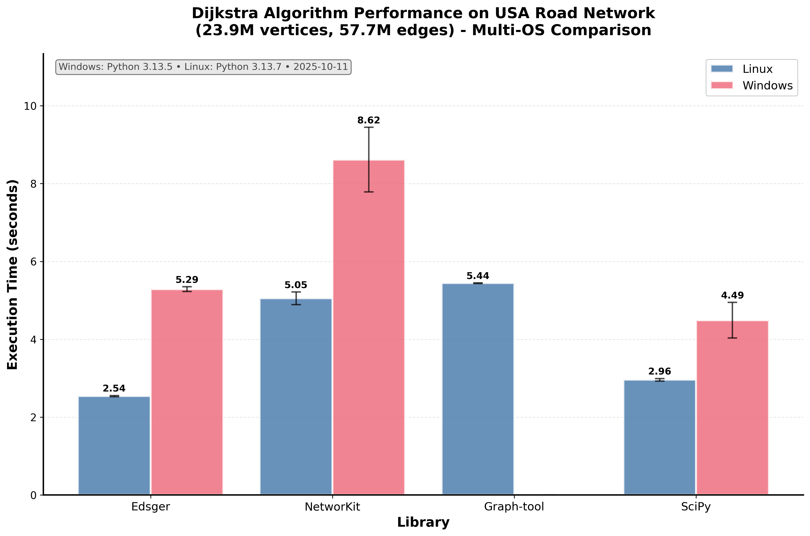

Edsger¶
Graph algorithms in Cython
Welcome to the Edsger documentation! Edsger is a Python library for efficient graph algorithms implemented in Cython. The library currently focuses on shortest path algorithms, with Dijkstra’s algorithm fully implemented and additional algorithms planned for future releases.
Why Use Edsger?¶
Edsger is designed to be dataframe-friendly, providing seamless integration with pandas workflows for graph algorithms. Also it is rather efficient on Linux. Our benchmarks on the USA road network (23.9M vertices, 57.7M edges) demonstrate nice performance:
{kind=link}
Pandas Integration Made Simple¶
import pandas as pd
from edsger.path import Dijkstra
# Your graph data is already in a DataFrame
edges = pd.DataFrame({
'tail': [0, 0, 1, 2],
'head': [1, 2, 2, 3],
'weight': [1.0, 2.0, 1.5, 1.0]
})
# No conversion needed - use directly!
dijkstra = Dijkstra(edges, orientation="out")
distances = dijkstra.run(vertex_idx=0)
distances
array([0., 1., 2., 3.])
Key Features¶
Native pandas DataFrame support - No graph object conversion required
High performance - Cython implementation with aggressive optimizations
Memory efficient - Optimized for large-scale real-world datasets
Easy integration with NumPy and pandas workflows
Production ready - Comprehensive testing across Python 3.9-3.13
Quick Links¶
Installation - How to install Edsger
Quick Start - Get started quickly with basic examples
API Reference - Complete API reference
Table of Contents¶
User Guide
API Reference
Development